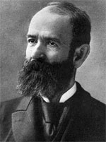

|

|

|
|
|
Gilded Age financial wizard Jay Gould was born in Roxbury,
New York in 1836 to a farming family. Gould (christened
Jason) showed a single-minded intensity to make money at an
early age. He tried his hand at being an inventor and
mapmaker, and at age twenty-one, he and a partner opened a
tannery. Gould joined forces with another leather merchant
to cheat his partner (who had accused Gould of siphoning
funds), and became sole owner of the business.
By 1860, Gould was in New York City, and turned his
prodigious and unscrupulous energies toward speculation on
Wall Street and in the railroad industry. His timing was
perfect. Long stalled by Southerners, a Republican-dominated
Congress in 1862 passed legislation furthering the
development of railroads, banks, and other industries in the
North thereby opening up unprecedented business
opportunities (mostly unregulated) to those willing and able
to take advantage of them.
In 1867, Gould gained control of the Erie Railroad, along
with partners James Fisk and Daniel Drew. Business rival
Cornelius Vanderbilt also coveted the Erie and attempted a
hostile takeover. The ensuing "Erie War" featured an
unsavory series of actions on the part of both men,
eventually ending in a truce. Two years later Gould achieved
permanent notoriety when he conspired to corner the gold
market. With the war over, the U.S. government planned to
resume the gold standard and release the gold it held in
reserve for public trading. In anticipation, Abel Corbin,
President U.S. Grant's brother in law, was persuaded to act
as front man for Gould. Corbin advised the President to
instruct the treasury to not release the gold. Unknown to
Grant, the Gould "gold ring' began aggressively purchasing
whatever gold they could, forcing prices to skyrocket.
On September 24, 1869 (known as "Black Friday') panic
ensued as investors stormed the banks demanding to withdraw
their gold. Overwhelmed, bankers shut their doors creating
near riots that were only stopped by the state militia. The
ring collapsed the following day when Grant, now aware he
had been duped, ordered the reserves released. Prices
plummeted. Probably tipped off by Corbin the day before the
crash, Gould and Fisk sold their gold and raked in a profit
of about eleven million dollars while half of New York's
banks and businesses lay in ruins. The incident tarnished
the Grant administration in its first major scandal.
By 1872 the "gold ring' had dissolved but angry public
protest over Gould's greedy behavior forced him from control
of the Erie Railroad. Known as the most hated man in
America, Gould shrugged off his detractors and looked
westward. He bought, reorganized, and generally improved
large portions of the Union Pacific Railroad, Kansas Pacific
Railroad, and later the Denver Pacific, Central Pacific, and
Missouri Pacific consolidating them into the Gould system.
He eventually owned over 15,000 miles of track, half the
railroad miles in the Southwest and more than any other
individual in the country. Gould fought many battles with
railroad labor unions, particularly the Knights of Labor.
He also possessed mines, real estate, timber, and other
industries. Locally, he owned the New York elevated lines,
and acquired control of the Western Union Telegraphic
Company, as well as the fledgling New York World.
Gould used his speculative gains to further
industrialization, especially in the West. Unquestionably,
he saved the Union Pacific Railroad from bankruptcy and
streamlined its operations. Instead of merely acquiring
properties, he also adeptly managed them. But in spite of
these constructive contributions, his unsavory reputation
stuck, partially because of Gould's refusal to curry favor
with the hostile public and partially as a consequence of a
press who frequently quoted his worst rivals. When Jay
Gould died, from tuberculosis and overwork, in his elegant
mansion on the Hudson River at age fifty-six in 1892, many
still considered him a social pariah and few called him
friend.
Source: Ari Hoogenboom, ed., Facts on File Encyclopedia of American
History: The Development of the Industrial United States, 1870 to 1899 (New York: Facts on
File, 2003), 117-118.
|